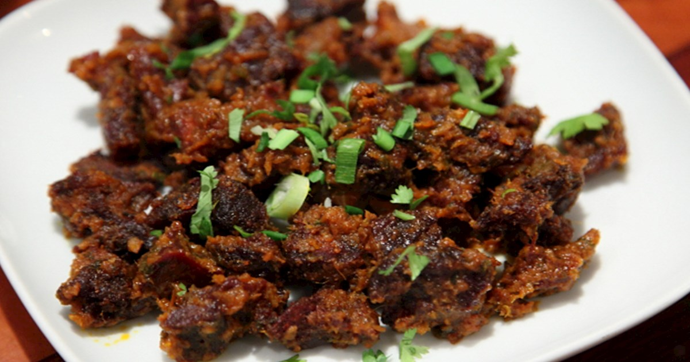

Recipe for the Chhoyla.

Chhoyla is a popular Nepali dish that is traditionally made with grilled meat, typically chicken or buffalo, and seasoned with spices and herbs. It is a spicy and flavorful appetizer that is perfect for meat lovers and those who enjoy bold and tangy flavors.
To make chhoyla, the grilled meat is diced into small pieces and mixed with finely chopped onions, tomatoes, green chilies, ginger, garlic, coriander leaves, cumin powder, and mustard oil. The mixture is then seasoned with salt and lemon juice to taste, giving it a zesty and tangy flavor.
Chhoyla is often served as an appetizer or snack, accompanied by a cold beer or a refreshing drink. It is a great dish to share with friends and family, as it is easy to prepare and can be customized to suit individual preferences. Whether you prefer it mild or spicy, chhoyla is a delicious and satisfying dish that is sure to leave your taste buds wanting more.
Ingredient for the recipe.
- Grilled meat (chicken or buffalo), diced into small pieces
- Onion, finely chopped
- Tomato, finely chopped
- Green chilies, finely chopped
- Garlic, minced
- Ginger, minced
- Coriander leaves, finely chopped
- Cumin powder
- Mustard oil
- Salt
- Lemon juice
Instruction for the recipe
- In a mixing bowl, combine the diced grilled meat with finely chopped onion, tomato, green chilies, garlic, ginger, and coriander leaves.
- Add cumin powder and a generous amount of mustard oil to the mixture. Mix well to combine all the ingredients.
- Season the mixture with salt to taste, and add lemon juice to give it a tangy flavor.
- Mix the ingredients well until everything is fully combined.
- Cover the bowl with a plastic wrap and refrigerate for at least 30 minutes to allow the flavors to meld together.
- When ready to serve, take the mixture out of the refrigerator and give it a good stir.
- Heat a grill pan or a non-stick skillet over medium-high heat.
- Add the meat mixture to the pan and cook for 5-7 minutes, stirring occasionally, until the meat is slightly charred and crispy on the edges.
- Transfer the chhoyla to a serving plate and garnish with some fresh coriander leaves.
- Serve hot as an appetizer or a snack, accompanied by a cold beer or a refreshing drink.
Now enjoy your delicious and flavorful Nepali chhoyla!
Return to the top
Return to the main page